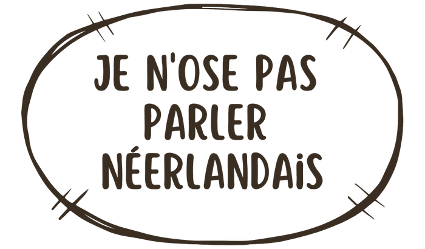
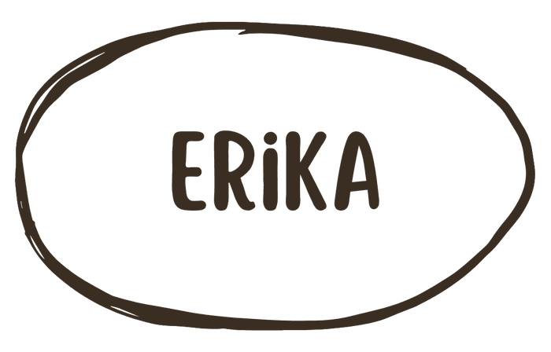
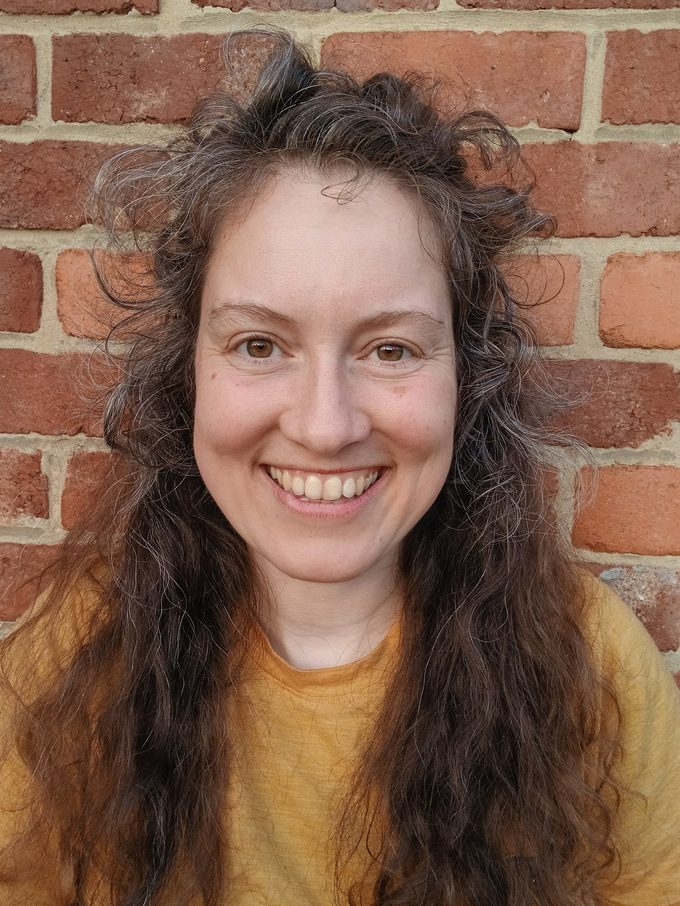
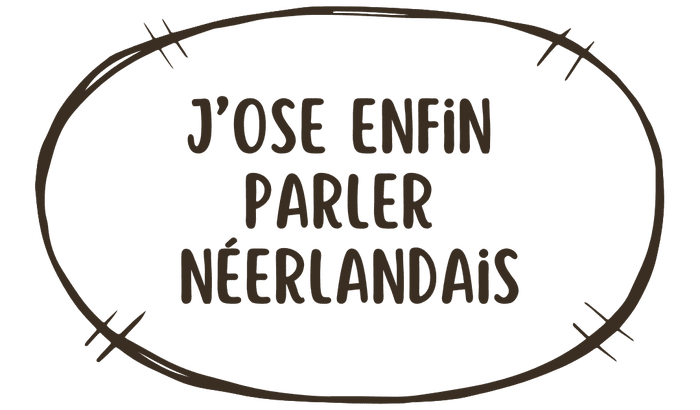

Das Goe — Qui-Quoi

Je n'ose pas parler néerlandais
Tu comprends un peu le néerlandais, mais ta gorge se serre dès que tu dois répondre ?
Rassure-toi : tu n'es pas nul en langues. Tu as juste été victime d'une méthode scolaire rigide qui a paralysé ton cerveau. En classe, face à un tableau noir, ton corps se met en alerte, et ta parole se bloque par peur du jugement.
Pour libérer ta parole, il faut fuir l'école.
Das Goe
J'ai créé DAS GOE (« c'est bon ! » en flamand) pour te redonner le pouvoir de t'exprimer sans souffrir.
Si tu te figes ou si tu paniques à l'idée de parler néerlandais aujourd'hui, ce n'est pas parce que tu es « nul ». C'est juste que ton cerveau a été braqué par une école traditionnelle qui t'a forcé à intellectualiser la langue au lieu de simplement la vivre.
En tant que coach en gestion du stress (formée à la cohérence cardiaque et à la respiration anti-hyperventilation), je le vois à chaque fois : on marche, on bouge, et le stress qui bloquait la parole retombe tout seul.
- Zéro théorie
Rien à étudier par cœur. Jamais.
- Zéro stress
Un cadre bienveillant où faire des fautes est célébré.
- 100% plaisir
On respire, on bouge et on pratique la vraie babbel.
Qui suis-je pour te promettre ça ?

Erika

Salut, moi c'est Erika, Débloqueuse de Parole & Facilitatrice Linguistique. Je suis là pour te sauver des bancs d'école.
J'ai un aveu à te faire : j'adore les langues, mais j'ai toujours détesté les étudier. Flamande d'origine, j'ai pourtant failli rater mes cours de français à l'école. Mon cerveau refusait d'imprimer la grammaire abstraite. C'était une corvée monumentale.
Mon vrai déclic ? Je me suis fait des amis francophones géniaux. Pour communiquer, j'ai dû parler avec les mains, les pieds, trois mots cassés et surtout d'immenses fous rires. En vivant des moments réels avec des gens que j'appréciais, mon français a explosé. Sans dictionnaire.
J'ai répété cette aventure au Pérou (espagnol), en Ukraine (russe) et en Chine (chinois), avant de poser mes valises en Wallonie.
Et alors ? Le chinois, je ne sais même plus dire merci. Le russe, il me reste une dizaine de mots. Même l'espagnol, si je ne le pratique pas, s'endort.
Mais à chaque fois, ça me rassure : dès que je remets un pied dans le pays, la langue revient petit à petit, en quelques jours. Comme si elle n'avait jamais vraiment disparu, juste mise en veille.
C'est ce que j'aimerais que tu ressentes avec DAS GOE. Ce sentiment de blocage total, de « j'ai tout oublié », c'est souvent un mensonge que le stress te raconte — pas la réalité. La bonne info est encore là, quelque part. Il lui faut juste le bon cadre pour ressortir : zéro pression, zéro jugement, et l'occasion de parler, tout de suite.
C'est ça, la vraie leçon de mes trois langues « oubliées » : on ne repart jamais vraiment de zéro. On repart juste débloqué.
Ma philosophie tient en 3 piliers simples
- Parler tout de suite
Même avec trois mots cassés.
- Vivre des expériences réelles
Le rire et l'action fixent une langue 10 fois plus vite dans ton cerveau.
- Se foutre royalement des fautes
On veut de la connexion, pas de la perfection.
Le secret pour oser s'exprimer, c'est le lien humain, pas la grammaire. Bon, avoir un amoureux local reste la technique ultime… mais ce n'est pas toujours facile à trouver !
Ce qu'ils en disent
J'ose enfin parler néerlandais

« Très chouette soirée organisée par Erika. Un moment de convivialité pour discuter en néerlandais autour du feu en toute bienveillance et avec zéro jugement. »
Michaël Rousseau — recommande
« Un accueil chaleureux, une activité où le respect de chacun est primordial, chacun vient comme il est et découvre ou approfondit son lien avec la nature, avec les autres et avec lui-même. Une très belle expérience. »
Inès Pesneau — recommande
Prêt à débloquer ta parole en t'amusant ?… Das Goe !
Ne laisse pas une mauvaise expérience scolaire te bloquer toute ta vie.